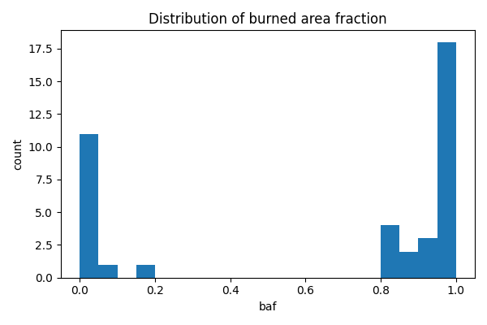
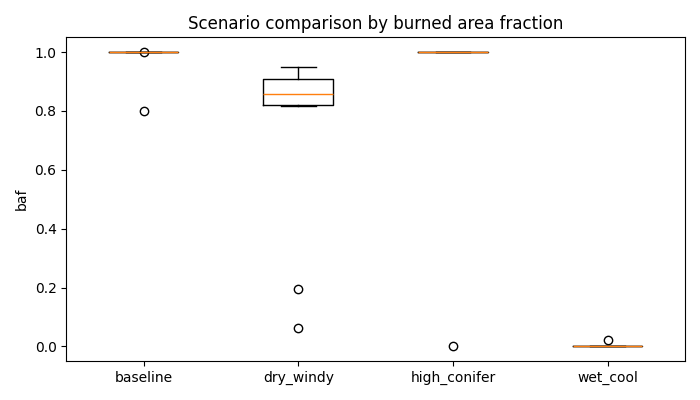

Forest fire experiments report
Overall
- Total runs: 40
- Mean burned area fraction: 0.6523
- Burned area p95/p99: 0.9999 / 1.0000
- Catastrophic probability (baf >= 0.8): 0.6750
- Scenario ranking metric: auc_normalized_mean
Worst scenarios by normalized AUC
- baseline: 0.0373
- high_conifer: 0.0364
- dry_windy: 0.0222
Absolute KPI ranking
Mean burned area fraction (absolute, point estimate)
- baseline: 0.9795
- high_conifer: 0.8996
- dry_windy: 0.7278
Mean burned area fraction (95% bootstrap CI)
- baseline: 0.9795 (95% CI: 0.9397..0.9995)
- high_conifer: 0.8996 (95% CI: 0.6996..0.9997)
- dry_windy: 0.7278 (95% CI: 0.5017..0.8895)
Conservative risk ranking (mean BAF upper 95% CI bound)
- high_conifer: upper_ci=0.9997 (mean=0.8996, 95% CI: 0.6996..0.9997)
- baseline: upper_ci=0.9995 (mean=0.9795, 95% CI: 0.9397..0.9995)
- dry_windy: upper_ci=0.8895 (mean=0.7278, 95% CI: 0.5017..0.8895)
Mean AUC (absolute)
- baseline: 29677.2000
- high_conifer: 27291.6000
- dry_windy: 22347.3000
Normalized KPI ranking
Mean peak_fire_fraction (normalized)
- baseline: 0.0835
- high_conifer: 0.0763
- dry_windy: 0.0513
Mean auc_normalized (normalized)
- baseline: 0.0373
- high_conifer: 0.0364
- dry_windy: 0.0222
Top parameter-metric correlations
- param_humidity vs time_to_extinguish: -0.8779
- param_rain_enabled vs baf: -0.8486
- param_rain_intensity vs baf: -0.8486
- param_temperature_c vs baf: 0.8486
- param_rain_enabled vs max_spread_rate: -0.8425
Figures

